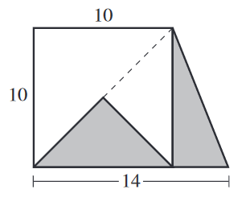

A scale drawing of a proposed trapezoidal landscape
design is shown in the figure below, with the given
dimensions in meters. The trapezoid consists of a right
triangle and a square divided into 3 isosceles right
triangles. The unshaded regions will be white rock; the
shaded triangular regions will be black rock. What is
the area, in square meters, that will be black rock?

We can find the area of the triangle with base 14 and height 10:
$$ A = \frac{1}{2}bh $$
$$ A = \frac{1}{2}(14)(10) $$
$$ A = 70 $$
We need to subtract the smaller isosceles right triangle to get just the shaded region. The smaller isosceles right triangle is a quarter of the area of the square.
$$ A_{\text{shaded}} = 70 - \frac{1}{4}A_{\text{square}} $$
$$ A_{\text{shaded}} = 70 - \frac{1}{4}(10)^2 $$
$$ = 70-25 =\boxed{45} $$